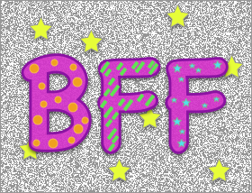

“All I have learned, I learned from books.” ― Abraham Lincoln
Initial sources I used to learn html & css to create a website
If I adapt the citation to me and to the technology progress since the 19th century:
All I have learned so far that has helped me build my blog, I learned from books, from online courses, from online forums and from friends and of course from continual trial and error as well. All without spending a penny beyond what I parted with for a book: £13.25.
I will write more about self-learning (its gratification and challenges) maybe another time, I want to focus here on the initial list of sources I used to teach myself HTML and CSS:
-
 I started by reading Jon Duckett’s book HTML&CSS design and build website. I believe this book was made for me.
Jon Duckett starts from the basics, he gives very good advice, he really writes to someone who has never coded before. The text is minimal, the pages are airy, he uses lots of coloured illustrations that makes it easy to read with plenty of examples for each point he covers.
Anyone who ever writes an educational book should definitely inspire themselves from this book.
I started by reading Jon Duckett’s book HTML&CSS design and build website. I believe this book was made for me.
Jon Duckett starts from the basics, he gives very good advice, he really writes to someone who has never coded before. The text is minimal, the pages are airy, he uses lots of coloured illustrations that makes it easy to read with plenty of examples for each point he covers.
Anyone who ever writes an educational book should definitely inspire themselves from this book. -
I started applying what I learned while I did the Coursera Michigan University online courses:

- Introduction to HTML5 by Colleen van Lent, Ph.D., Lecturer
- Introduction to CSS3 by Colleen van Lent, Ph.D., Lecturer
-
I got most of my questions answered by W3Schools.com or by googling them and finding the answers on various forums.
-
 Friends and community. I am not part of a web designer group yet. I have a good friend in Technology who put me in the right direction and made good suggestions. And he was the lucky recipient of my silly questions (but kind enough to tell me that there are no silly questions :) e.g. ‘Do I need to create a new page per article?’). Although not to abuse this option, I would always suggest to try everything else and let the question/issue mature before reaching out. It happened to me to be stuck for a long time but when the solution came to me I felt even happier not to have called for help.
I am still learning so I will most probably update this post in the future. Happy learning!